一句话概括:query-based 前馈 3DGS(以 NVIDIA TokenGS 为代表)用 N 个纯 latent 的可学习 token 聚合多视图证据、每个 token 解码 64 个高斯——但 latent token 不知道自己在 3D 里的位置和辖区,同一 token 解码出的高斯常散布在相距很远的场景区域。LocusGS 的答案是给每个 token 增加一个显式三维锚点状态(anchor state):一个 3D 中心 $\boldsymbol{\mu}$ + 一个支撑半径 $r$,在全部 12 层 decoder 中逐层 refine,并贯穿三处机制——① cross-attention 加 anchor-to-ray 几何偏置(锚点到像素 Plücker 光线的距离 → 高斯型 logit bias);② self-attention 注入锚点位置编码;③ 高斯中心改为 anchor-centered 解码($\boldsymbol{\mu}^G=\boldsymbol{\mu}+r\boldsymbol{\delta}$)。
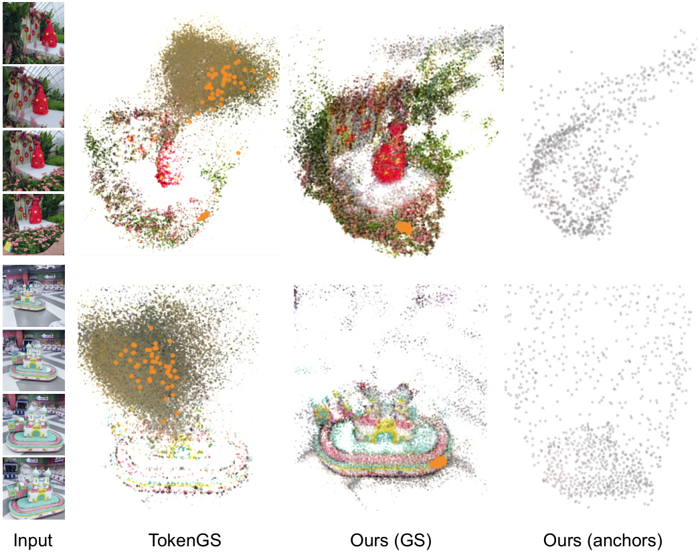
论文把前馈 3DGS 分为三种范式,理解这个划分是理解 LocusGS 定位的关键:
pixelSplat / MVSplat / DepthSplat 一脉:每像素(或每 patch)沿光线回归深度得到一个高斯。高斯数与输入分辨率×视图数绑定(32 张 512×512 → 超 800 万图元),视图越多冗余越大。
GS-LRM / TokenGS 一脉:N 个可学习 query 经 transformer decoder 聚合多视图特征,每 query 解码一组高斯。高斯预算与输入解耦——这是优点,但 query 的空间角色变成纯隐式的。
在 (b) 的每个 query 上挂显式 3D anchor,让「这个 token 负责场景里哪块地方」成为可 refine 的显式状态而非隐式涌现的属性。
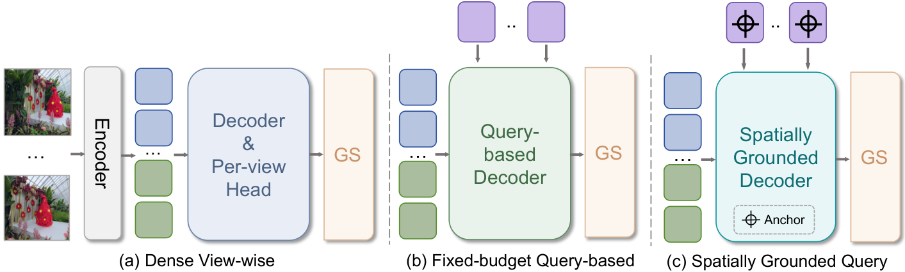
同一 query 解码出的高斯"often scatter across distant scene regions"(§1),全局看高斯云弥散、浮点多(图1 左)。定量证据(Table 3):RE10K 上 TokenGS 的 token 级散布 $C_{\mathrm{centroid}}$ 均值 5.1164,而 LocusGS 仅 0.1978。
§3.2.1:"Such a representation does not explicitly specify where the query operates in 3D space or how large a region it should cover." latent query 既不指明作用位置、也不指明覆盖范围 → 它聚合的图像证据与解码的高斯都不受局部性约束。
| 符号 | 含义 | 形状 / 取值(源码核实) |
|---|---|---|
| $V$ | 输入视图数 | 2(RE10K)/ 4(DL3DV 训练) |
| $N$ | Gaussian token(query)数 | 1024 base / 4096 finetune(options.py:56) |
| $K$ | 每 token 解码高斯数 | 64(options.py:59) |
| $d$ | token 特征维 / 每头维 | 1024 / 64(16 头,options.py:48-49) |
| $\mathbf{q}_i^l$ | 第 $l$ 层第 $i$ 个 token 特征 | $[B,N,1024]$,共 $L$=12 层(options.py:47) |
| $\mathbf{a}_i^l=(\boldsymbol{\mu}_i^l,r_i^l)$ | anchor state:中心 + 支撑半径 | $\boldsymbol{\mu}\in\mathbb{R}^3$,$r\in\mathbb{R}_+$ |
| $\rho_i^l$ | 半径的原始(无约束)参数 | $r=\mathrm{softplus}(\rho)$,下界 $10^{-3}$(options.py:76) |
| $\boldsymbol{\ell}_j=(\mathbf{m}_j,\bar{\mathbf{d}}_j)$ | patch 级 Plücker 光线(矩,方向) | 像素光线图经 patch 大小 avgpool 得到,$[B,VH_pW_p,6]$ |
| $D(\boldsymbol{\mu},\boldsymbol{\ell})$ | 点到光线距离 | $\|\boldsymbol{\mu}\times\bar{\mathbf{d}}-\bar{\mathbf{m}}\|_2$(式 24) |
| $\sigma_0$ | 几何偏置的固定带宽基数 | 0.1(论文 §3.2.4;代码 decoder_blocks.py:415 固定 buffer,不可学) |
| $\gamma$ | 几何偏置的可学习缩放 | $\gamma=\mathrm{softplus}(\tilde\gamma)$,$\tilde\gamma$ 初值 $-2.25$ → $\gamma_0\approx0.100$(decoder_blocks.py:414,448) |
| $\boldsymbol{\delta}_{i,k}$ | 第 $k$ 个高斯的局部偏移 | 由 token 特征线性头预测,见 §7 |
| $\mathcal{S}$ | 受渲染监督的 decoder 层集合 | 默认 $\{6,12\}$(options.py:63) |
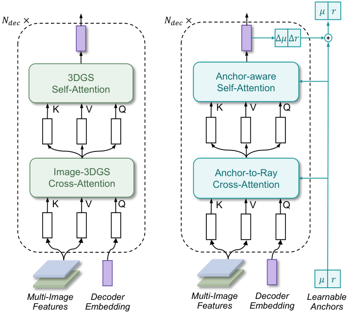
locusgs.py:151-153),几何偏置是无参数的解析计算——241.5M 总参数里 anchor 相关增量主要来自 refine 头与 PE MLP,这解释了 +8.8% 参数的主要来源。
这是全文回答「显式三维锚点是什么」的核心节:它不是检测器框、不是点云、不是体素,而是挂在每个 Gaussian token 上的一组可学习、可微、逐层修正的 3D 状态量 $\mathbf{a}_i^l=(\boldsymbol{\mu}_i^l, r_i^l)$——中心 $\boldsymbol{\mu}\in\mathbb{R}^3$ 声明「这个 token 负责的位置」,半径 $r\in\mathbb{R}_+$ 声明「它的辖区有多大」。
| 张量 | 形状 | 来源 / 变换 |
|---|---|---|
| anchor 中心原始参数 $\boldsymbol{\mu}^{0,\mathrm{raw}}$ | $[N,3]$ | 可学习参数,初始化 $\mathcal{N}(0,1^2)$ 且 z 向 $+1.0$ 偏置(locusgs.py:136-141),跨场景共享 |
| 激活后中心 $\boldsymbol{\mu}$ | $[B,N,3]$ | $\boldsymbol{\mu}=s_{\mathrm{scene}}\cdot\tanh(\boldsymbol{\mu}^{\mathrm{raw}})$,$s_{\mathrm{scene}}=1$(locusgs.py:252)→ 中心被 tanh 约束在归一化场景空间 $(-1,1)^3$ |
| 半径原始参数 $\rho^0$ | $[N,1]$ | 可学习,初值 $\mathrm{softplus}^{-1}(\max(r_{\mathrm{init}},r_{\min}))$,$r_{\mathrm{init}}=1.0$(locusgs.py:143-145, options.py:75) |
| 激活半径 $r$ | $[B,N,1]$ | $r=\mathrm{softplus}(\rho)$ 且 clamp 下界 $r_{\min}=10^{-3}$(locusgs.py:261) |
残差由更新后的 token 特征经轻量预测头产出:$\Delta\boldsymbol{\mu}_i^l=f_\mu(\mathbf{q}_i^{l+1})$,$\Delta\rho_i^l=f_\rho(\mathbf{q}_i^{l+1})$。源码里 $f_\mu$ 实为 pos_act(xyz_embed(q))(locusgs.py:357),$f_\rho$ 为 Mlp(1024→1024→1)(locusgs.py:153,360)——论文没写的是:中心更新同样在 raw 空间累加、再经 tanh 激活,因此 anchor 永远不能逃出归一化场景包围盒,这是隐含的几何正则。
无独立 anchor 回归损失(无 GT)。两条间接监督:① 多层渲染损失经 anchor-centered 解码反传到 $(\boldsymbol{\mu},r)$;② anchor visibility 正则(权重 $\lambda_A=0.1$)把 anchor 中心投影到监督视图、惩罚落在所有视图视锥外的 anchor——这是 TokenGS 原有高斯可见性正则的扩展,论文明确「同时施加于解码高斯中心和 anchor 中心」。
activation_head 的全部参数被标记 _no_weight_decay(activations.py:116-117),refine 头不在其列、正常衰减。
这是全文回答「如何魔改高斯注意力」的第一处、也是消融中贡献最大的一处:给 token→图像的 cross-attention 的 logits 加一项解析几何偏置——锚点到每个图像 patch 对应的 Plücker 光线的 3D 距离,经半径自适应带宽变成高斯型惩罚,加在 softmax 之前(不是 mask、不是门控,是 additive logit bias)。
| 步骤 | 输入 → 输出 | 说明 |
|---|---|---|
| 像素光线构造 | 内外参 → $[B,V,6,H,W]$ | Plücker $\boldsymbol{\ell}=(\mathbf{m},\mathbf{d})$,$\mathbf{m}=\mathbf{o}\times\mathbf{d}$,$\mathbf{o}$ 为相机中心 |
| patch 级池化 | $[B,V,6,H,W]$ → $[B,VH_pW_p,6]$ | 与图像 patch(=8)同 kernel/stride 的 avgpool(论文式 21;locusgs.py:53-64) |
| 光线归一化 | $(\mathbf{m},\mathbf{d})$ → $(\bar{\mathbf{m}},\bar{\mathbf{d}})$ | 同除 $\|\mathbf{d}\|_2$(geometry.py:25-27) |
| 距离计算 | $\boldsymbol{\mu}$ $[B,N,3]$ × $\boldsymbol{\ell}$ $[B,M,6]$ → $D$ $[B,N,M]$ | $M=VH_pW_p$ 为图像 token 数 |
| 偏置合成 | $D,r$ → $b$ $[B,N,M]$ | 高斯型,clamp 到 $[-20,0]$(geometry.py:44) |
| 注入 | content logits $[B,H_h,N,M]$ + $\gamma b$ $[B,1,N,M]$ | 跨 16 头广播(decoder_blocks.py:539),进 SDPA |
patch 图像特征的证据沿整条射线分布,深度未知;把 anchor 投到像素上会丢掉「沿 ray 的容忍度」。点到直线距离天然与深度无关:anchor 只要在这条光线附近(任意深度),该 patch 就是相关证据——这是比 2D 投影匹配更正确的 3D 亲和度。
$\sigma=\sigma_0 r$:半径大(辖区大、或还没收敛)的 token 获得平缓的惩罚,保留广域证据;半径小(已聚焦)的 token 惩罚尖锐,只看紧邻光线。带宽随 refine 自适应收紧,相当于 coarse-to-fine 的证据收拢schedule——而且零额外参数。
内容项与几何项量级不可比,直接相加会让几何项淹没或被淹没;$\gamma\geq0$ 让网络逐层自学校准几何强度。源码初值 $\tilde\gamma=-2.25$ → $\gamma_0\approx0.100$(decoder_blocks.py:414),即训练初期几何只起轻微引导,靠学习决定最终强度。
保持证据聚合软可导,避免早期 anchor 不准时硬截断造成梯度断流;clamp 到 $[-20,0]$ 是数值保护(bf16 下 softmax 输入不能过负)。代码还预留了稀疏采样模式($k>0$ 时把 bias 当 proposal 分布做 multinomial/topk 光线采样,decoder_blocks.py:544-557),默认关闭($k=0$,options.py:64)。
偏置本身无参数($\sigma_0$ 固定、几何项解析),唯一可学习量是逐层的 $\gamma$;监督完全来自渲染损失反传。该模块在消融中是第二大贡献源:去掉(content-only cross-attn)DL3DV 4-view PSNR −1.533;退化为不乘半径的 center-only 带宽 −0.514(§12,Table 4)。
「魔改」的第二处轻得多:token 间 self-attention 不加任何几何 bias,只把 anchor 中心的位置编码加进 token 特征,让 token 交互「知道自己和谁在哪」。
源码实现(decoder_blocks.py:966-982, 372-373):$\mathrm{PE}$ 是正弦位置编码——先把 $\boldsymbol{\mu}\in(-1,1)^3$ 线性映射到 $[0,2\pi]$,取 128 维正弦特征(temperature=10000),再经 MLP 升到 1024 维,逐层直接加到 token 上后过标准 self-attention(qk-norm,16 头)。
无直接监督;PE MLP 随渲染损失端到端学习。⚠️【待核实】 论文 Figure 3 的示意容易让人以为 self-attention 内部有几何连线项;源码证实没有——几何项只存在于 cross-attention。这是读这篇论文最容易误读的一点。
每个 token 最终经共享 ClipActivationHead(单个 Linear(1024 → 64×14=896),activations.py:107-111)解码 64 个高斯的 14 通道原始参数;关键改动在中心通道的组装方式:
$\boldsymbol{\delta}$ 是 token 预测的局部偏移,半径 $r$ 充当「每个 token 高斯组的局部坐标尺度」("the radius acts as the local coordinate scale",§3.2.6)。源码细节:$\boldsymbol{\delta}$ 经 pos_act 激活($\mathrm{sign}(x)\cdot\mathrm{expm1}(|x)|$,activations.py:126-133,即逆对数变换——小偏移近似线性、大偏移指数展开,但随后被 $r$ 缩放约束),组装见 locusgs.py:278-282。
activations.py:135-153)| 属性 | 通道 | 激活函数 |
|---|---|---|
| 中心偏移 $\boldsymbol{\delta}$ | 3 | $\mathrm{sign}(x)\cdot\mathrm{expm1}(|x|)$,clamp $[-1000,1000]$ → 再 $r\boldsymbol{\delta}+\boldsymbol{\mu}$ |
| 不透明度 $\alpha$ | 1 | $\mathrm{sigmoid}(x-2.0)$(整体左偏,初始不透明度低) |
| 缩放 $\mathbf{s}$ | 3 | $\min(\exp(x-\mathrm{shift}),\,0.075)$,$\mathrm{shift}=1-\ln 0.075$(硬帽防巨型高斯) |
| 旋转 $\mathbf{R}$ | 4 | 四元数 L2 归一化(eps=$10^{-4}$) |
| 颜色 $\mathbf{c}^G$ | 3 | $0.5\tanh(x)+0.5$ → RGB $\in[0,1]$,SH 仅 0 阶 DC、无视相关颜色(rendering/gs.py:192 导出时把颜色通道当 $f_{\mathrm{dc}}$ 处理) |
渲染 MSE+SSIM 直接监督全部属性;高斯中心额外受 visibility 正则($\lambda_G=1.0$)约束必须落在至少一个监督视图视锥内。
多层渲染监督:受监督层集合 $\mathcal{S}=\{l_1,\dots,l_M\}$(默认 $\{6,12\}$,最后一层恒包含),每个受监督层用当时的 token 与 anchor 解码中间高斯并渲染 $\hat{\mathbf{I}}_t^{l_m}=\mathcal{R}(\mathcal{G}^{l_m},\Pi_t)$,总目标为凸组合(越深的层权重越大):
| 损失项 | 公式 | 权重(真值) | 作用 |
|---|---|---|---|
| 重建 MSE | $\mathcal{L}_{\mathrm{MSE}}^{l_m}=\|\hat{\mathbf{I}}-\mathbf{I}\|_2^2$(losses.py:89) | 1.0 | 像素级主监督 |
| SSIM | $(1-\mathrm{SSIM})/2$(losses.py:99-105,fused_ssim) | $\lambda_{\mathrm{SSIM}}=0.2$(options.py:115) | 结构相似性 |
| 高斯可见性正则 | $\phi(\tilde u,\tilde v)=\mathrm{ReLU}(|\tilde u|-1)+\mathrm{ReLU}(|\tilde v|-1)$,$\mathcal{L}_{\mathrm{vis}}=\frac{1}{|\mathcal{X}|}\sum_{\mathbf{x}}\min_{\Pi_t}\phi$(式 27/28;losses.py:108-117) | $\lambda_G=1.0$(options.py:116) | 惩罚所有监督视图视锥外的高斯中心(TokenGS 遗产,clamp 上界 1.0) |
| anchor 可见性正则(本文新增) | 同上,施加于 anchor 中心 $\{\boldsymbol{\mu}_i^{l_m}\}$(losses.py:30-64) | $\lambda_A=0.1$(options.py:118) | 防止 anchor 漂出全部视野,直接正则化中间层 refine |
| LPIPS | VGG-LPIPS(locusgs.py:126-128) | $\lambda_{\mathrm{LPIPS}}=0.0$(options.py:113)——评测用 LPIPS 但训练不启用 | 未启用 |
推理为单次前向,无任何每场景优化;DL3DV 4 视图 4096 token 配置下纯前向(不含渲染)407.28±62.96 ms/样本(A100 40GB,Table 8)。评测时输入视图数可变(2/4/6),token 数不变——这是 query 范式相对像素对齐范式的结构性优势。
官方仓库 leo-frank/LocusGS(2026-10-09 浅克隆验证,最后提交 2026-10-08,Apache-2.0,含完整训练/评测代码与配置,预训练权重在 Google Drive)。本仓库是 NVIDIA TokenGS 的直接 fork 改造(activations.py 等文件保留 NVIDIA Apache 头),TokenGS 模型类仍完整保留(models/tokengs.py),便于逐行 diff 两处差异。以下条目全部带 file:line。
| 项 | 值 | 出处 |
|---|---|---|
| encoder | 3 层 ViT block,1024 维,16 头,mlp_ratio=4,qk-norm,LayerScale init 0.01 | options.py:46-50, enc_dec.py:40-56 |
| patch 化 | patch_size=8;图像 patch emb 与 Plücker patch emb 各自独立 Linear 后相加 | options.py:45, locusgs.py:204-206 |
| decoder | 12 层 DecoderBlockWithAnchor,块内顺序 Cross → Self → FFN,各带 LayerScale | options.py:47, decoder_blocks.py:291-335 |
| 几何偏置 | $\sigma_0$=0.1 固定 buffer;$\gamma$=softplus(geo_scale) 逐层可学习,init $-2.25$($\gamma_0\approx0.100$);bias clamp $[-20,0]$;$\sigma^2$ 下界 $10^{-3}$ | decoder_blocks.py:414-415,448,531-539, geometry.py:14,41,44 |
| anchor | 中心 init $\mathcal{N}(0,1)$+z 偏置 1.0,tanh 激活(scene_radius=1);半径 init 1.0,softplus 下界 $10^{-3}$;每层独立 refine 头 | locusgs.py:136-153,252,261, options.py:74-76 |
| 高斯头 | 共享 ClipActivationHead,Linear(1024→896),trunc_normal std=0.002,全部参数免 weight decay | activations.py:107-124 |
| 优化器 | AdamW(fused),$\beta=(0.9,0.95)$,wd=0.05(1 维参数不衰减),grad clip 1.0 | train.py:143,283-294, options.py:106 |
| LR schedule | OneCycleLR(上升段 pct_start_steps=1000,余弦退火),base lr 4e-4 / finetune 4e-5 | train.py:305-309, options.py:103-104, options_dl3dv.py:25 |
| 训练规模 | base 300 epochs / finetune 20 epochs;8×GPU(accelerate MULTI_GPU, bf16),base bs=8/GPU(有效 64),finetune bs=2/GPU | options_dl3dv.py:16,23, acc_configs/gpu8.yaml, scripts/dl3dv/locusgs.sh |
| 渲染 | gsplat 光栅化,自实现 DeferredBP 自定义 autograd(前向存深度与 means2d),背景色默认 grey | rendering/gs.py:45-101, options.py:53 |
| 鲁棒性 | 每层输出做 NaN/Inf 检查并打印非有限值统计 | locusgs.py:171-179,517-519 |
| 评测 | eval 预设单卡 bs=1;PSNR 在 loss 内同步计算;指标 MSE/SSIM/LPIPS | options_dl3dv.py:53-92, losses.py:123 |
| # | 论文说法 | 源码实际 | 影响评估 |
|---|---|---|---|
| 1 | §3.2.4 未给 $\gamma$ 初值,只说"learnable" | $\tilde\gamma$ 初值 $-2.25$,即 $\gamma_0=\mathrm{softplus}(-2.25)\approx0.100$,几何项初始很弱(decoder_blocks.py:414,448) | 复现关键:几何偏置是「渐进启用」的,直接设 $\gamma_0=1$ 可能改变训练动态 |
| 2 | A.5 说"squared bandwidth is lower-bounded",未给值 | $\sigma^2$ clamp 下界 $1\times10^{-3}$(geometry.py:41) | 补全论文缺省数值 |
| 3 | Table 7:warmup 2000(base)/400(finetune) | OneCycleLR 的 pct_start_steps 默认 1000(options.py:104),且是 OneCycle 而非纯 cosine | warmup 与 schedule 表述均有出入【待核实:预设中未见覆盖,但不排除脚本层覆盖】 |
| 4 | 式(6)/(7) 把中心更新写成直接残差相加 | 残差加在 raw 空间,中心实际值为 $\tanh(\mu^{\mathrm{raw}})\times s_{\mathrm{scene}}$($s_{\mathrm{scene}}=1$)(locusgs.py:252,357) | anchor 被硬约束在 $(-1,1)^3$;场景需先归一化到该盒子,超出部分不可达 |
| 5 | Figure 3 的「Spatial-guided Token Interaction」易读作 self-attn 有几何偏置 | self-attn 只加 anchor 正弦 PE(128 维→MLP),无任何几何项(decoder_blocks.py:372-373,982) | 读图误导风险;消融选项 no_self_attn_anchor_pos 印证 PE 是唯一改动(options_dl3dv_ablation.py:56) |
| 6 | 论文未提颜色表示 | 颜色 3 通道 RGB、SH 仅 0 阶 DC,无视相关外观(rendering/gs.py:192) | 限制视角相关材质表现;TokenGS 遗产 |
| 7 | 式(8) 称 $\boldsymbol{\delta}$ 由 head 预测,未提激活 | $\boldsymbol{\delta}$ 经 $\mathrm{sign}\cdot\mathrm{expm1}$ 逆对数激活(非 tanh、非线性)(activations.py:126-133) | 偏移分布长尾,靠 $r$ 缩放兜底 |
| 8 | 论文未提 encoder 深度与规模 | encoder 仅 3 层(1024d/16h),decoder 12 层——算力大头在 decoder | 与 dense 方法的大 encoder 形成鲜明对比 |
| 9 | §4 称与 TokenGS「same architecture except anchor designs」 | 仓库同时保留了 4 种 cross-attn 变体:geometric_positional(默认)/ learned_positional / content_only / deformable(TokenGS 的多视图可变形注意力)(decoder_blocks.py:447-470) | 消融变体由配置一键切换,工程上是干净的对照设计 |
finetune_re10k_2view 从 base checkpoint resume(scripts/re10k/locusgs.sh)。assets/ 自带),RE10K 用自带 index——复现数字时务必用同一 index 文件。| 方法 | 视图 | PSNR↑ | SSIM↑ | LPIPS↓ | #GS |
|---|---|---|---|---|---|
| MVSplat | 2 | 17.54 | 0.529 | 0.402 | 229K |
| DepthSplat | 19.31 | 0.615 | 0.310 | 229K | |
| TokenGS (4096 tok) | 19.58 | 0.615 | 0.429 | 262K | |
| LocusGS (4096 tok) | 20.90 | 0.678 | 0.377 | 262K | |
| MVSplat | 4 | 21.63 | 0.721 | 0.233 | 458K |
| DepthSplat | 23.12 | 0.780 | 0.178 | 458K | |
| TokenGS (4096 tok) | 23.44 | 0.757 | 0.312 | 262K | |
| LocusGS (4096 tok) | 24.80 | 0.812 | 0.248 | 262K | |
| MVSplat | 6 | 22.93 | 0.775 | 0.193 | 688K |
| DepthSplat | 24.19 | 0.823 | 0.147 | 688K | |
| TokenGS (4096 tok) | 24.16 | 0.770 | 0.296 | 262K | |
| LocusGS (4096 tok) | 25.78 | 0.836 | 0.225 | 262K |
| 方法 | PSNR↑ | SSIM↑ | LPIPS↓ | #GS |
|---|---|---|---|---|
| MVSplat | 26.39 | 0.869 | 0.128 | 131K |
| DepthSplat | 27.47 | 0.889 | 0.114 | 131K |
| GS-LRM | 28.10 | 0.892 | 0.114 | 131K |
| TokenGS (1024 tok) | 28.02 | 0.896 | 0.147 | 66K |
| LocusGS (1024 tok) | 28.50 | 0.909 | 0.135 | 66K |
| TokenGS (4096 tok) | 28.41 | 0.903 | 0.135 | 262K |
| LocusGS (4096 tok) | 28.89 | 0.916 | 0.124 | 262K |
1024-token 变体已用 GS-LRM 一半的高斯(66K vs 131K)在 PSNR/SSIM 上反超(+0.40/+0.017);4096-token 变体 PSNR/SSIM 全场最佳,LPIPS 仍不及 DepthSplat/GS-LRM(0.124 vs 0.114)。
| 数据集 | 方法 | Mean↓ | Variance↓ | Median↓ |
|---|---|---|---|---|
| RE10K | TokenGS | 5.1164 | 34.1712 | 2.7911 |
| LocusGS | 0.1978 | 0.1371 | 0.1117 | |
| DL3DV | TokenGS | 0.5881 | 0.0139 | 0.5531 |
| LocusGS | 0.0433 | 0.0004 | 0.0383 |
$C_{\mathrm{centroid}}=\frac{1}{NK}\sum_{i,k}\|\boldsymbol{\mu}_{i,k}^G-\bar{\boldsymbol{\mu}}_i^G\|_2$(式 12,token 内高斯到本 token 质心的平均距离):RE10K 均值缩小 25.87×、DL3DV 缩小 13.58×。注意两数据集归一化约定不同,数值只在数据集内部可比(论文原注)。
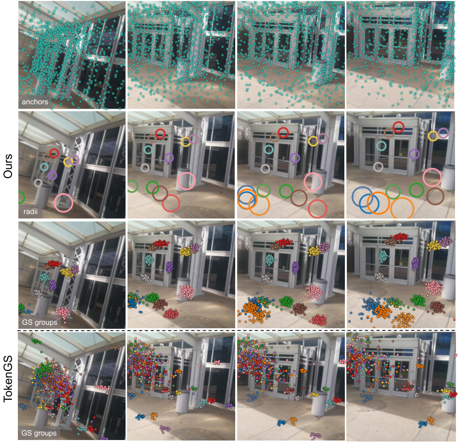
| 模型 | Params | 存储 | 前向耗时 |
|---|---|---|---|
| TokenGS | 222.0 M | 846.93 MiB | 340.99 ± 93.57 ms |
| LocusGS | 241.5 M(+8.8%) | 921.31 MiB(+8.8%) | 407.28 ± 62.96 ms(+19.4%) |
延迟增量主要来自逐层的点到光线距离计算($N\times M$ 叉乘,12 层×4096 token×数万 patch 光线)与 refine 头;且 LocusGS 方差更小(62.96 vs 93.57 ms)——几何偏置使注意力模式更稳定。渲染耗时两方法相同(同预算同光栅化器),不含在此表。
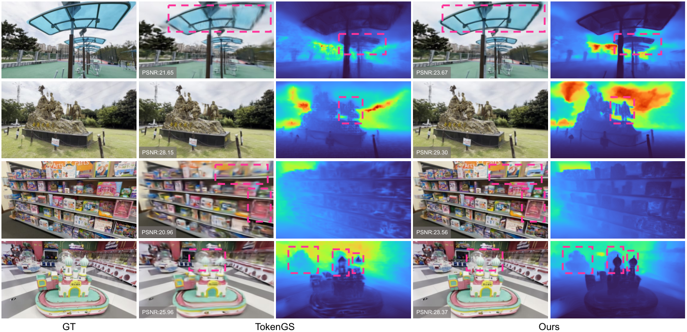
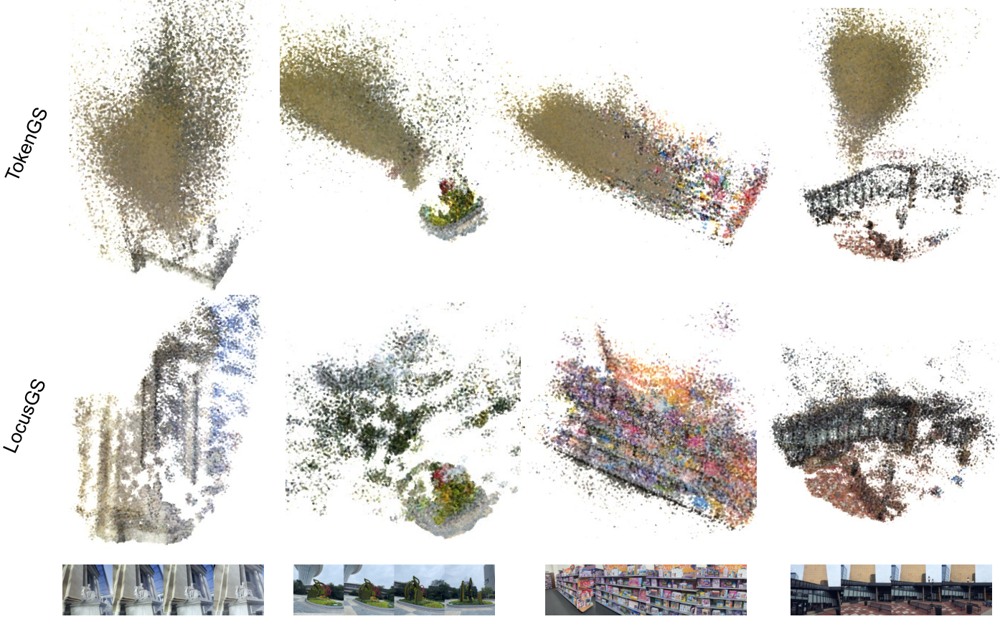
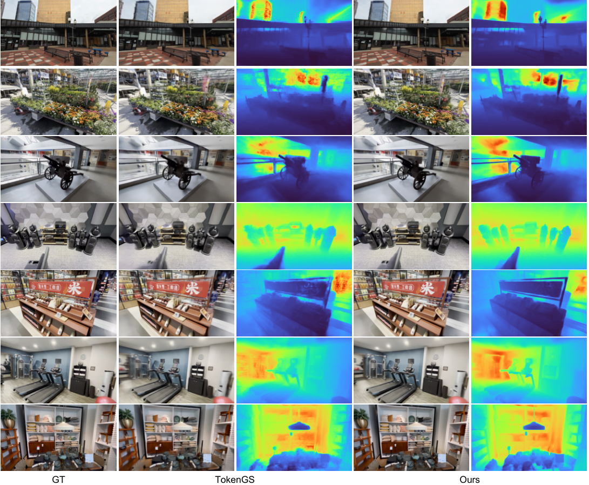
| 消融组 | 变体 | PSNR↑ | SSIM↑ | LPIPS↓ | ΔPSNR |
|---|---|---|---|---|---|
| — | Full model | 24.284 | 0.7843 | 0.2709 | — |
| Anchor 表示 | 无半径状态(仅 center) | 23.640 | 0.7618 | 0.3007 | −0.644 |
| Anchor 表示 | 有半径但不 refine | 23.979 | 0.7746 | 0.2866 | −0.305 |
| 注意力设计 | content-only self-attn(去 anchor PE) | 24.171 | 0.7807 | 0.2764 | −0.113 |
| 注意力设计 | content-only cross-attn(去几何偏置) | 22.751 | 0.7220 | 0.3500 | −1.533 |
| 注意力设计 | center-only 偏置(带宽不乘半径) | 23.770 | 0.7670 | 0.2940 | −0.514 |
| 高斯解码 | free center(去锚定解码) | 22.079 | 0.6860 | 0.3970 | −2.205 |
| 监督层 $\mathcal{S}$ | PSNR↑ | SSIM↑ | LPIPS↓ |
|---|---|---|---|
| {6, 12}(默认) | 24.284 | 0.7843 | 0.2709 |
| {12}(只监督最后层) | 23.549 | 0.7575 | 0.3074 |
| {3, 6, 9, 12}(更密) | 24.071 | 0.7793 | 0.2774 |
只监督最后一层 −0.735 dB:中间层监督是 anchor refine 能收敛的关键(否则前 6 层的 anchor 收不到任何梯度信号);但更密的监督反而略降——中间层过早被渲染目标锁死会限制 anchor 继续移动的自由度。
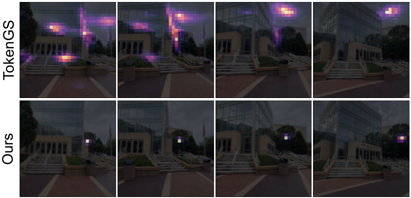
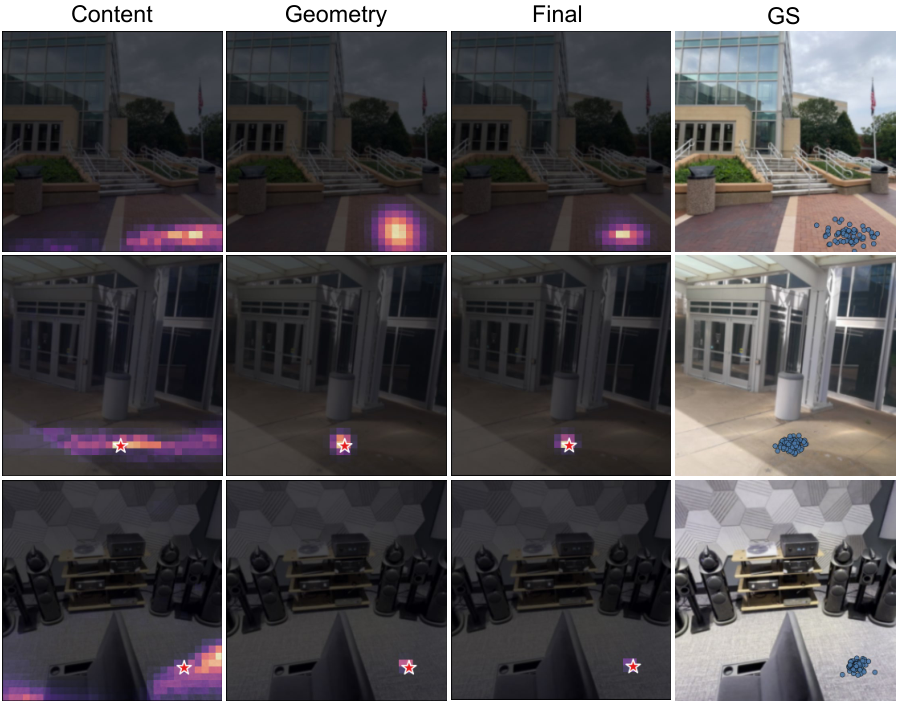
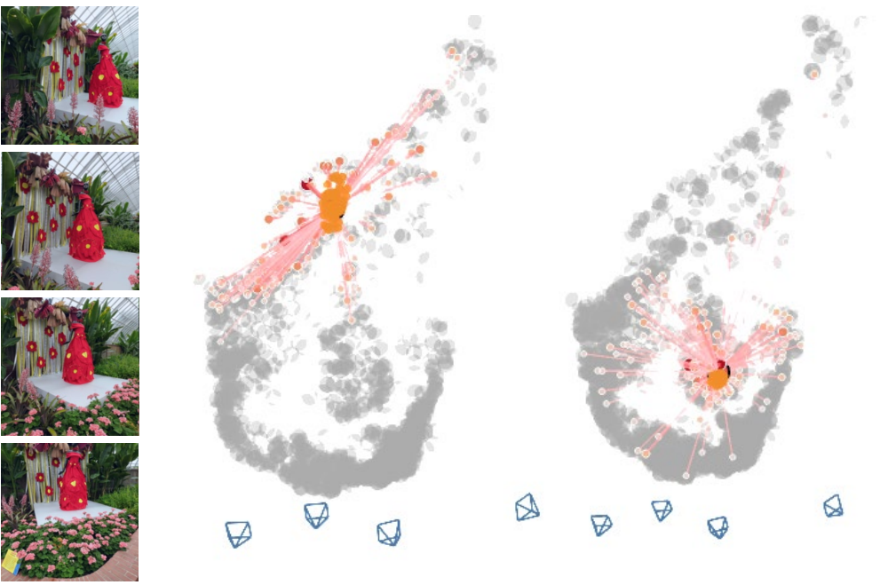
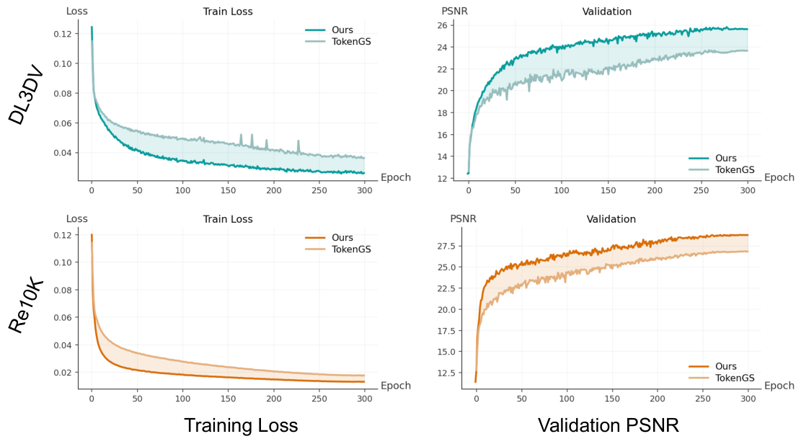
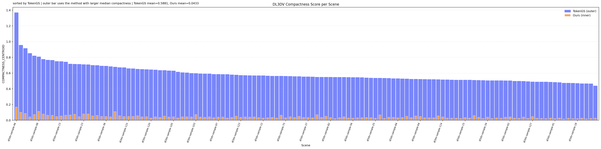
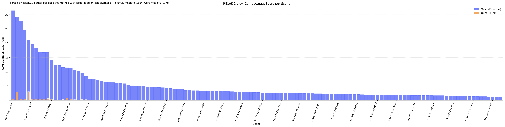
| 方法 | 年份 | 输入假设 | 场景表示 | 监督信号 | 训练数据 | 训练成本 | 推理耗时 | 关键指标 | 开源 |
|---|---|---|---|---|---|---|---|---|---|
| pixelSplat | 2023 | 2 视图+位姿 | 像素对齐高斯(每像素沿光线回归深度) | 渲染 MSE+LPIPS | RE10K/ACID | — | — | —(本文未列) | 是 |
| MVSplat | 2024 | 多视图+位姿 | 像素对齐高斯(平面扫描代价体) | 渲染损失 | RE10K/DL3DV | — | — | RE10K 26.39 / DL3DV-4v 21.63 | 是 |
| DepthSplat | 2024 | 多视图+位姿 | 像素对齐高斯 + 单目深度先验融合 | 渲染损失+深度 | RE10K/DL3DV | — | — | RE10K 27.47 / DL3DV-4v 23.12 | 是 |
| GS-LRM | 2024 | 2-4 视图+位姿 | patch token → per-token 高斯(transformer 直接回归) | 渲染 MSE+LPIPS | Objaverse+RE10K | — | — | RE10K 28.10(131K GS) | 否 |
| TokenGS | 2026.04 | 任意视图+位姿(容忍位姿噪声) | N 个 latent token × K 高斯,与分辨率/视图数解耦;支持 TTT | 渲染 MSE+SSIM+可见性 | RE10K/DL3DV/动态场景 | — | 340.99 ms | RE10K 28.41 / DL3DV-4v 23.44(262K) | 是(nv-tlabs) |
| LocusGS | 2026.08 | 任意视图+位姿 | N 个 anchor token × K 高斯;anchor(μ,r)逐层 refine | 多层渲染 MSE+SSIM+可见性(高斯+anchor) | RE10K/DL3DV | 8×GPU bf16,300+20 epochs【时长待核实】 | 407.28 ms | RE10K 28.89 / DL3DV-4v 24.80(262K) | 是(完整训练代码) |
| 范式 | 代表方法 | 核心先验 | 局限 |
|---|---|---|---|
| 稠密像素对齐 | pixelSplat → MVSplat → DepthSplat | 高斯沿光线长在像素上,深度可回归 | 预算随视图膨胀;深度噪声敏感 |
| latent query | GS-LRM → TokenGS | 固定预算可学习 query 聚合全局证据 | query 空间角色隐式,token 级弥散 |
| 空间锚定 query(本文) | LocusGS | query 携带显式 (μ,r) 状态,几何先验进注意力与解码 | 依赖位姿;各向同性半径;延迟 +19% |
| (参照系)anchor 组织局部高斯 | Scaffold-GS(每场景优化) | 稀疏锚点 + 神经高斯局部生成 | 需每场景迭代优化,非前馈 |
库内交叉:前馈模型脉络见 前馈 3D 重建模型综述(LRM/GS-LRM 一脉);多视角重建全景见 3DGS 多视角重建 SOTA 调研;基础概念见 3DGS 基础与改进综述。
① 「token 挂显式 3D 状态」是通用模式:我们的 head_gs/body_gs/scene_gs 拆分本质也是「每束高斯要有空间辖区」,LocusGS 给出了一种可微、可学习、可消融验证的 formalization;② 点到 Plücker 光线距离的几何偏置与骨干无关,任何「3D 查询点 ↔ 图像特征」注意力都能插;③ 多层渲染监督 {中层, 末层} 的凸组合权重(⅓,⅔)是便宜的收敛改进。
① 位姿硬依赖:我们的输入若走 VGGT 等 pose-free 路线,几何偏置需要先把估计位姿当 GT 用——位姿误差会直接污染偏置(论文 B.4 自认);② 场景归一化到 $(-1,1)^3$ 的约定对人体-场景混合尺度需要重新设计(人体细节区需要远小于场景级的归一化粒度);③ 单场景 262K 高斯的预算分配对「人脸需要高密度」的目标不友好——anchor 机制支持非均匀分配,但默认 init 是空间均匀散布。
半径自适应带宽 $\sigma=\sigma_0 r$:把「查询该看多大范围」与「查询自认为辖区多大」绑定,是一个零参数、可解释的 inductive bias。我们的 3DMM 头部 landmarks 对齐(657 点)如果改成 query-based 特征聚合,同样可以让每束高斯的注意力范围随其尺度自适应——这比固定窗口或 KNN 更优雅。
训练:8×GPU(bf16)×300 epochs(base)+ 20 epochs(finetune),241.5M 参数;推理:407 ms/样本纯前向(A100),不实时但离「可用」不远;作为离线重建预处理可接受,作为交互式组件不够。代码完整度高(训练/评测/配置齐全,Apache-2.0),魔改成本低于平均水平。
问题:anchor 支撑是 $(\boldsymbol{\mu}, r)$ 的球;论文 B.4 自认「isotropic」对细长结构(栏杆、电线、建筑边缘)刻画差——球对称带宽在点到光线距离上无法表达「沿结构方向容忍、垂直方向严格」。佐证:几何偏置 $\sigma=\sigma_0 r$ 只有标量自由度(decoder_blocks.py:529);消融中 center-only(去掉半径)−0.514 dB 说明半径维度本身有价值但仅此一维。改进:把半径升级为 3 维对角协方差(或全协方差),偏置改为马氏距离 $-\frac12(\Delta)^{\top}\Sigma^{-1}(\Delta)$,参数每 token +2~5 个,与现有 refine 头结构兼容。
问题:几何偏置以精确内外参构造 Plücker 光线为前提(B.4 自认);而当前前馈重建的主战场已向 pose-free 迁移(VGGT/π³ 一脉)。佐证:locusgs.py:53-64 光线图直接由输入内外参构造,无不确定性建模。改进:与 VGGT 式位姿头联合训练(位姿作为可 refine 状态与 anchor 联合优化),或对位姿加噪训练以学习软化的带宽;论文自己也把「jointly modeling pose uncertainty」列为未来方向。
问题:DL3DV-4v LPIPS 0.248 vs DepthSplat 0.178;训练不启用 LPIPS 损失($\lambda_{\mathrm{LPIPS}}=0$,options.py:113),颜色通道为 RGB/DC(rendering/gs.py:192)——高频纹理与视角相关外观双双受限。改进:finetune 阶段开启 LPIPS(代码已内置 VGG-LPIPS,locusgs.py:126-128,一键开权重);颜色升阶到 SH 1-2 阶,通道数 14→23/38,头部线性层等比扩即可。
问题:每层对全部 $M=VH_pW_p$ 条光线计算 $N\times M$ 距离与偏置,是 +19.4% 延迟的主因之一;代码已预留稀疏采样路径($k>0$ 时按 bias 分布 multinomial/topk 采样光线,decoder_blocks.py:544-557)但默认关闭且论文未消融。改进:开启并调参 $k$(如 512/1024),预计可砍掉大部分偏置计算;需处理采样的不可导性(代码注释自认 tau_sample 在离散路径上无梯度,decoder_blocks.py:546-549)。
问题:anchor 仅经渲染损失 + visibility 正则间接学习;Table 3 显示方差已很小,但没有机制保证 anchor 覆盖无死角(弱纹理区 anchor 稀疏正是论文图5 展示的现象,被当作 feature 而非 bug)。改进:若有深度/点云先验(如 DUSt3R/VGGT 输出),可对 anchor 中心加蒸馏损失;或加覆盖率正则(惩罚场景中无 anchor 邻域的已重建表面)。
问题:TokenGS 的两大卖点——测试时 token 优化(TTT)与动态 token(num_dynamic_gs_tokens,代码中保留但默认 0,options.py:60)——本文均未实验。改进:anchor 作为显式低维状态,理论上比 1024 维 latent 更适合 TTT(变量少、有物理意义、可加正则);动态场景下 anchor 轨迹化(每帧 refine)是自然扩展。
| 优先级 | 方向 | 预期收益 | 实现成本 |
|---|---|---|---|
| 高 | 各向异性 anchor 协方差 | 细长结构/边缘质量 | 小(改偏置与半径头) |
| 高 | pose-free 化(联合位姿) | 适用范围数量级扩大 | 大(需改数据与训练管线) |
| 中 | LPIPS 入损失 + SH 升阶 | 感知质量短板补齐 | 极小(开关+通道数) |
| 中 | 光线稀疏采样 | 延迟 −20~40%【推测】 | 小(已有代码路径) |
| 中 | anchor 几何蒸馏监督 | 收敛更快、覆盖更全 | 中(需先验模型) |
| 低 | TTT / 动态扩展 | 继承 TokenGS 全能力 | 中 |
个人认为最关键的三点:① 各向异性协方差——以最小改动补上「球对称」这个最显然的表达力缺口,且消融已证明半径维度值钱;② LPIPS+SH——几乎零成本补齐对 DepthSplat 的最后短板,性价比最高;③ pose-free——决定这篇工作是「query 范式的一个改进」还是「下一代前馈重建的通用组件」。
LocusGS 做了什么:给 query-based 前馈 3DGS 的每个 token 挂上一个显式三维锚点状态 $(\boldsymbol{\mu},r)$——中心声明位置、半径声明辖区,12 层 decoder 逐层 refine;锚点驱动三处机制:cross-attention 的点到光线高斯偏置(带宽随半径自适应)、self-attention 的锚点位置编码、以及 $\boldsymbol{\mu}+r\boldsymbol{\delta}$ 的锚定解码。
证据强度:同骨架同预算对 TokenGS +1.32~1.62 dB(DL3DV),token 级散布缩小 13.6~25.9×,消融链完整(最痛的两个组件恰好是两个「魔改」:锚定解码 −2.205、几何偏置 −1.533),代价 +8.8% 参数 / +19.4% 延迟。数字全部经 arXiv HTML 表格逐格复核;工程细节经官方源码 file:line 级复核,并纠正/补全了 9 处论文与代码的出入(γ 初值、tanh 激活、OneCycleLR、self-attn 无几何项等)。
一句话定位:这是 DETR 的「query 空间化」思想在 3DGS 前馈重建里的正确移植——DAB-DETR 证明 object query 需要显式 anchor box,LocusGS 证明 Gaussian token 需要显式 anchor ball;它不是新范式,而是 query 范式补上「空间状态」这块短板后的完成体。后续竞争点在:谁能把 anchor 升级为各向异性/不确定性状态,以及谁能摘掉位姿依赖。